Patchwork Pillows
This project might be just the thing for people who love quilts but fear they don't have the patience or endurance to complete such a large project, including instructions, patterns.
January/February 1982
Issue # 073 - January/February 1982
Do you love quilts . . . but fear that you don't have the patience (or endurance) to complete such a large sewing project? Well then, try your hand at stitching up...
by Christine Bradley Bock
Some chilly evening this winter-after you've put the chores to bed and are casting about for a pastime that'll fulfill your creative urges and turn out a functional itemransack your scrap bag, brush up on your needlework skill, and try piecing together a couple of colorful patchwork pillows.
These cozy cushions don't cost much to make (after all, you'll be using supplies that, for the most part, are probably already lying around the house) . . . are easily assembled in an evening or two (by hand or by sewing machine) .. . and can even provide a source of extra income (should you decide to peddle your creations at flea markets or craft fairs). What's more, after you've mastered the technique, you'll probably have gained enough confidence to make the transition from pillow art to full-fledged quiltmaking.
In the step-by-step directions that follow, I'll outline how to piece two traditional designs-the "Eight-Pointed Star" and "Robbing Peter to Pay Paul"-and then I'll tell you how to transform the geometric blocks into custom-crafted cushions.
GETTING ORGANIZED
To begin with, rustle up a few supplies and tools: an 8" X 11 " sheet of cardboard, scissors, a ruler, a hard-lead pencil, pins, needles, an iron and ironing board (for pressing seams open), some medium-weight woven cotton fabric (either sewing scraps or castoff clothing will work well), thread, half a yard of muslin, and some cotton or polyester filling.
Piping is an option that, when applied to the outer edges of the patchwork, will give your pillow a more finished look. The trim can be purchased, in a variety of shades, at fabric shops . . . or, if your sewing know-how is above par, you can make your own from cotton cording and hand cut bias strips of cloth (consult a good sewing manual for directions).
When you start collecting the fabric for your cushions-to-be, go ahead and "take a walk on the wild side". The use of textiles that are too similar in appearance and pattern can detract from the effect of the patchwork design. You'll likely find that the best combinations are, surprisingly, those that seem at first glance as if they'd never go together!
Before you glance ahead at my directions for pillow construction, let me point out a few ground rules: Try to cut your patchwork pieces with the grain (or weave) of the material ... be sure that the individual components are as uniform as possible (even tiny inconsistencies can add up, sometimes causing lopsided blocks) ... always group the sections you're working with before you sew any seams (one seemingly endless session of ripping apart tiny stitches after you've mismatched the segments will convince you of the wisdom of this warning) . . . and press open each seam as you progress.
EIGHT-POINTED STAR
First select three fabrics. Then measure and cut out, from your cardboard, a 3-1/2" square and a right triangle whose equal sides, adjacent to the right angle, each measure 3-3/4" (the triangle's hypotenuse-or longest side-will span about 5-3/8"). Use the cardboard template to trace and cut out eight triangles from each of the two fabrics that will form the star motif in the patchwork's center. Next, snip out another eight triangles and four squares, which will become the star's background, from the third material.
Arrange the pieces of the quilt block as shown in Photo 1.
You'll see that the pattern is made up of 16 squares . . . and that 12 of these blocks are each composed of two right triangles. To make one of the bicolor blocks, match two triangles, right sides together . . . pin the pieces . .. and make a seam 1/4 inch from the edge of the triangle's hypotenuse (the side opposite the right angle). Construct the other squares in the same manner.
Now, take your 16 squares and group them into eight sets of two side-by-side blocks, as illustrated in Photo 2 . . . then seam the appropriate edges.
When you've finished that step, pair each of the eight rectangles off with a neighbor to obtain the four squares de picted in Photo 3, and stitch the tong sides of the sections together.
At this stage, join the two pairs of squares, as in Photo 4.
Complete the Eight-Pointed Star patch work block by connecting the rectangles along the remaining seam, as in Photo 5.
ROBBING PETER TO PAY PAUL
To construct this slightly more complicated pattern, find two good-sized chunks of fabric-one light and the other dark-and cut cardboard patterns for a 4-1/2" square, a 2-1/2" square, and a right triangle that measures 2-3/4"-long on the sides adjacent to the right angle.
From your dark fabric, cut out one 4-1/2" square and 20 triangles. Then snip twelve 2-1/2" squares and 20 more triangles from the light-colored material. Now arrange all 53 cloth pieces in the pattern shown in Photo 6.
Try to visualize the design as a geometric collection of 32 smaller squares clustered around one large block. Join the 40 triangles into 20 small quadrangles (using the same method you employed for constructing the bicolor blocks in the Eight Pointed Star design), and then group the shapes into nine large squares . . . eight of which, you'll see, are composed of four smaller blocks, with the ninth being the 4-1/2" dark square. When you've finished your arrangement, sew the 12 light and 20 dark/light squares into eight groups of four blocks. Start by matching each small quadrangle with one of its neighbors (see Photo 7) and then connecting the two pieces along the appropriate edge.
Pair off the resulting 16 rectangles to yield the eight large blocks, as depicted in Photo 8, and stitch the components together along their longer sides.
Sew the nine squares into three strips, to obtain the sections shown in Photo 9.
Finally, to complete your patchwork masterpiece, connect the bands into the single large block that's illustrated in Photo 10.
FRAMING THE FABRIC
Although it's not a necessity, a border can do a splendid job of highlighting your patchwork design. To add a "frame" to the geometric pattern, measure the completed block, and trim off any crooked edges to insure that all four sides are of the same length.
Find a suitable fabric and cut four long strips, all of equal width: Now, snip two of these bands to the exact length of one of the patchwork's sides. Then cut the other two strips so that they measure the length of one side plus twice the width of the border (for example, if your block measures 12" X 12" and you're adding a 2" border, you'll need two bands that measure 2" X 12" and two that will be 2" X 16 ").
Once you've cut the border ribbons, sew the shorter strips to opposite (parallel) sides of the square, as shown in Photo 11.
Stich the longer bands to the other sides, as illustrated in Photo 12.
FROM PATCHWORK
If you've followed either of the above sets of directions, you should have a gorgeous geometric block that's just begging to be transformed into a patchwork pillow. To start the metamorphosis, take out your muslin (which will serve as the cushion's lining) and find a complementary fabric to serve as the pillow's backing. Using the completed block as your pattern, cut out two squares of muslin and one square of backing material.
Then, if you're planning to apply piping, baste the trimming-with the cording facing in-around the patchwork's perimeter, as has been done in Photo 13. Be sure to leave enough room for a 5/8" seam around the edge.
After the trim has been attached, sandwich the pillow's backing and the patchwork-right sides together-between the muslin squares, as shown in Photo 14.
Pin the layers together and stitch 5/8 inch away from the outer edges . . . or as close to the cording as possible. Be sure to leave an opening-about five inches in length-along one edge of the square so you can insert the stuffing.
Turn the casing right side out, and pack it to the desired plumpness with filling. After that's done, simply fold down the opening's raw edges, pin the gap, and close it off with tiny stitches.
Once you've obtained an elevated level of pillow mastery (which ought to come after you've put together two cushions or so), you can try drafting and assembling other geometric patterns. Just keep in mind that most patchwork blocks are simply a collection of squares . . . and soon you'll realize that a quilt is only a large cluster of patchwork pillow tops!
EDITOR'S NOTE: If you'd like to learn more about quiltmaking, you might want to read the article, "Patchwork Perfection" (issue 72, page 86). To order back issues, turn to page 120.
|
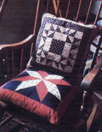 |
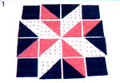 |
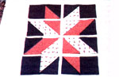 |
|
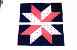 |
 |
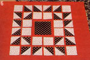 |
|
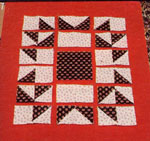 |
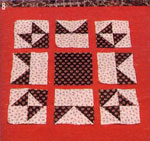 |
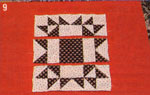 |
|
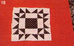 |
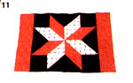 |
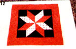 |
|
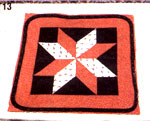 |
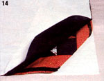 |
|